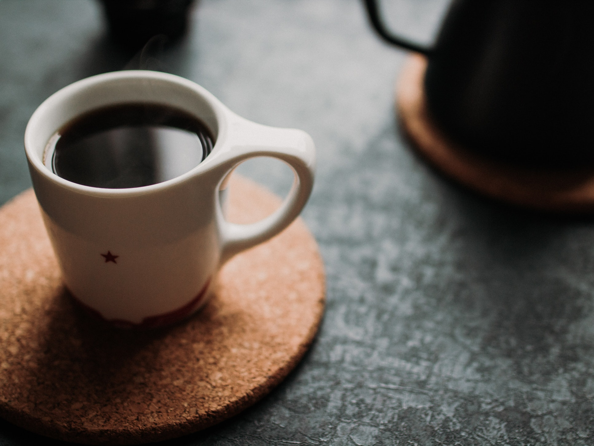
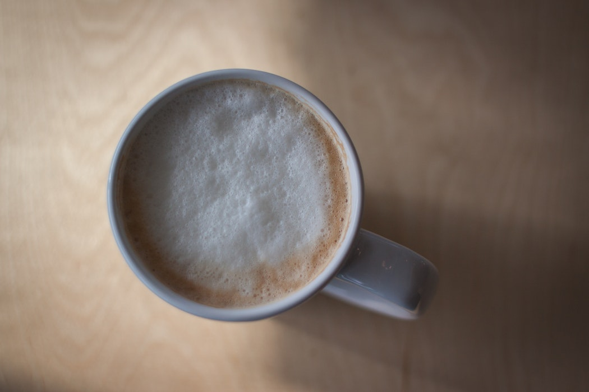
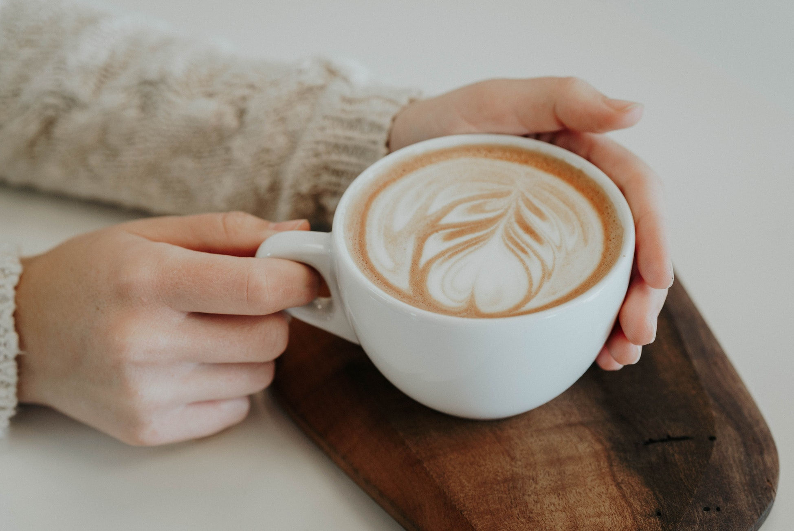
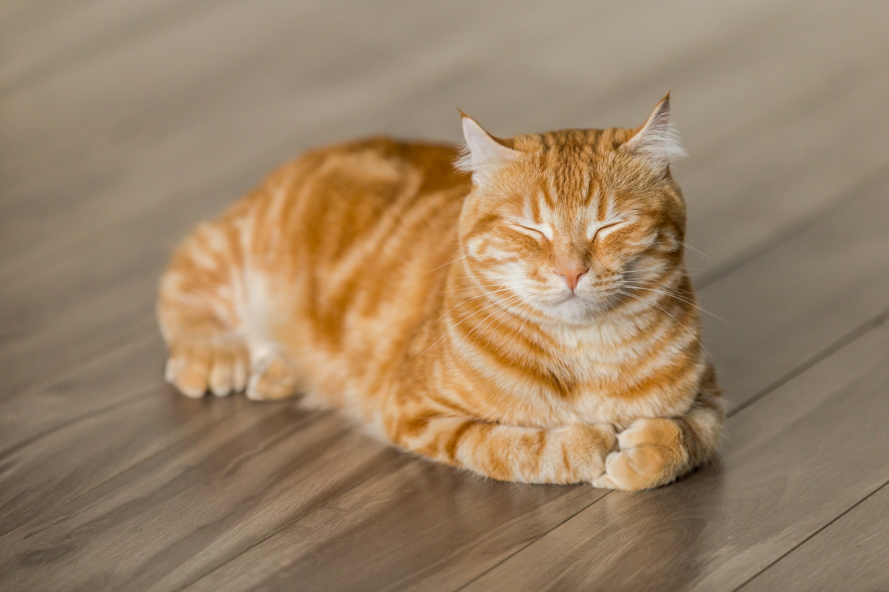
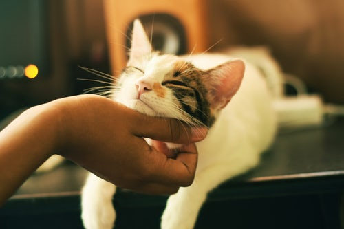

-

Plain Black
No frills, no fluff. A steaming cup of whatever we're brewing today, brewed only after you order.
-

Cappuccino
For the foam lovers. Lotsa fluff, a little milk, and two shots of bold, beautiful espresso.
-

Classic Latte
There's nothing better than a classic. Just two shots espresso, milk, and a touch of foamy goodness.
About C3
Calico Coffee Company was founded in 1997 by two undergraduate engineering students at the University of Michigan. Starbucks had infiltrated every corner of the downtown Ann Arbor area, pushing out the local coffee shops that had lined Main Street for decades. With support from other students, the two realized a new approach was necessary. Calico was opened as a co-op style coffee shop that offers steep discounts to members, veterans, teachers, and city service members.
Why Calico?
Coffee has nothing to do with cats. Or, does it? At Calico, yes. Our founders Greg Wentzel and Sarah Wilmer spent their childhoods raising stray or disabled cats and kittens, and this hobby followed them to college. But why keep all that cuteness to themselves? They weren't above using adorable kitties to help sell their coffee then, and they still aren't. After all, fluffy kitties! Today, Calico is home to 3 beautiful and friendly fluffballs. They work full-time as door-greeters, leg-warmers, and milk-taste-testers.
Peaches, 7
Ash, 3
Jasmine, 5